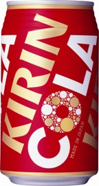

「キリンコーラ」、6月1日より発売 44
ストーリー by hylom
私はサントリー派なんですが…… 部門より
私はサントリー派なんですが…… 部門より
あるAnonymous Coward 曰く、
/.Jでもたびたびコーラネタが話題になりますが、なんとキリンがコーラに参入するそうです（ニュースリリース）。その名も「キリン コーラ」（そのまんま）。
キリンと言えばビールが有名ですが、キリン コーラには「ホップフレーバー」が使用されているそうです。ホップ味のコーラは想像できませんが、ビール党には受けるんでしょうか？

あれ？ (スコア:4, 興味深い)
近所の自販機で似たデザインのコーラが少なくても半年以上前から売ってるような気がするんだが・・・
「全国発売になった」ということか？
例：缶缶辞典＞キリンビバレッジ＞キリンコーラ [cancanziten.com] 入手日付：2009/07/08